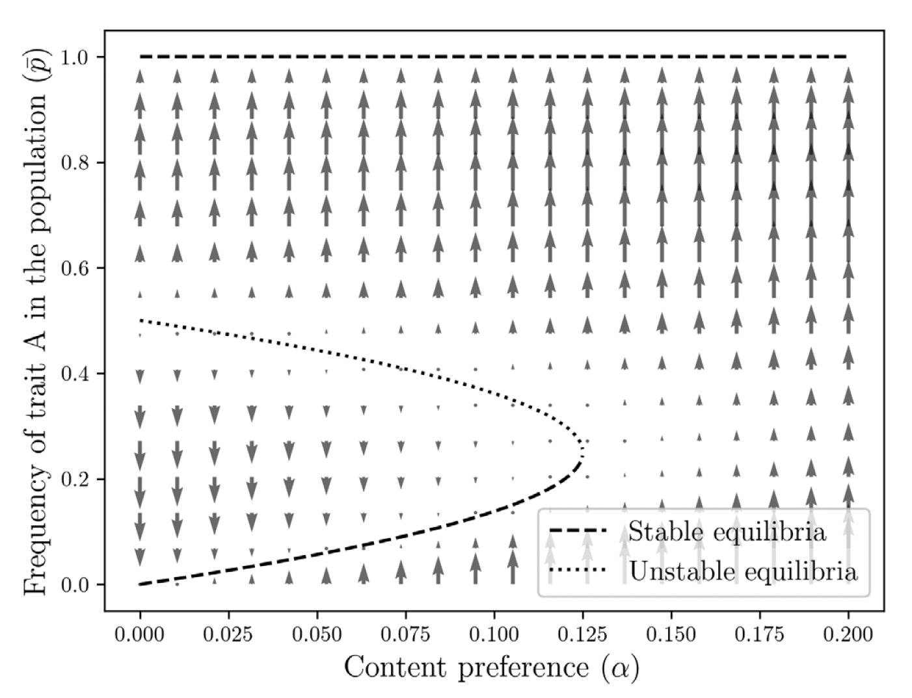

Endogenizing Cultural Preferences: A Futile Task for Social Science?
In a recent article published at PNAS—Weak Individual Preferences Stabilize Culture—Acerbi and de Courson (2025) argue that, even if we attribute cultural phenomena to “social influence,”
nonsocial preferences, differently from social forces, act consistently in the same direction, so that, even when weak, they sway social influence forces in the long run.
Put differently, exogenous preferences, whatever they may be, may override social forces if they are sufficiently powerful:
 |
|---|
| Figure from Acerbi and de Courson (2025) |
The authors tweaked a well-known model by Boyd and Richerson and added a dose of exogeneity to the system, and showed that this surgical addition can fundamentally change system behavior.
I find this, to put it mildly, radically interesting.
It is radically interesting, because the fact is that the article brings a fundamental theoretical tension out into the open: the problem of exogenous preferences.
Exogeneity of Preferences
One of the appealing features of the cultural evolution literature, at least for a sector of social scientists, has been its focus on population processes in determining preferences. In this approach, culture is something people “learn” from people. The literature did a remarkable job of specifying specific pathways, looking at, among other things, frequency-dependence or prestige-bias—models that specify how cultural transmission actually occurs.
To a sociologist’s eye1, this is something fascinating, both for theoretical and historical reasons, as it directly attacks to the problem of where people’s preferences come from.
1 Or, admittedly, my terrible eyes.
One of the few commendable criticisms of sociology directed at micro-economic modeling is the problem of exogenous preferences, i.e., the common practice of “taking individuals as they are,” with preferences constrained to be outside the systems being modeled.
This problem is at central stage in a—now neglected—classic, Talcott Parsons’s The Structure of Social Action. Parsons eloquently proposes that the “utilitarian” model of agency, with its conception of “ends” as “random,” cannot adequately explain why there is relative order rather than relative chaos and relative stability rather than relative change. A good chunk of the book is focused on what Parsons call the “utilitarian dilemma,” that is,
either the active agency of the actor […] is an independent factor in action, and the end element must be random; or [the actor] disappears and […] assimilated to the conditions of the situation (Parsons 1949, 64).
| Talcott Parsons Looking at the Utility Model |
The Structure’s critique is simple and effective. In essence, it was a rather principled rejection of exogenous preferences, and a call for endogenizing the latter. That said, the subsequent Parsonsian edifice fell short of being that interesting. The classic theoretical story asserted that (1) the force behind preferences was “values”—mysterious things like American individualism—and these values were shared among members of the public, and (2) people “learn” these values via socialization, a process through which culture-outside ends up located in culture-inside.
The Parsonsian edifice, in one way or another, continues in folk-theory form. One of the more exciting debates in sociology, in fact, was an implicit revitalization of Parsonsian ideas—what I personally call “cognitivist neo-Parsonsianism”—by people like Steve Vaisey and Omar Lizardo2, and a general movement in the late 2000s for a cognitively compatible conception of culture.
2 Full disclosure: I like this literature.
That said, for various historical and empirical reasons, the question of why individuals choose one belief, practice, or behavior over another could not be resolved.
The sources of this problem are not clear. In any case, it is plausible to say that, decades after Parsons, sociologists are simply not good at predicting why people choose, learn, or prefer A over B. They think that it must be something social. Something arbitrary. Something constructed. Definitely learned from other people. And that’s about it.3
3 To Parsons, it was a “neat” division of labor: economists can look at allocation given personal preferences, and sociologists can look at the sources of those very preferences.
Individuals As They Are
Acerbi and de Courson (2025) makes the issue much more explicit: the social influence models are not directional.
This is widespread. The classic socialization theories in sociology assume that the mechanism that drives people to adopt certain preferences or behaviors is conformity, and the alternative routes proposed recently are not specific and testable (see, e.g., Guhin, Calarco, and Miller-Idriss 2021). The same goes for the political socialization research: the widespread “social learning model,” in principle, boil down to the idea that, what kids see is what they learn (Jennings and Niemi 1968). The issue is not exclusive to sociologists or cultural evolutionists, for that matter.4
4 Bowles (1998).
One payoff of the cultural evolution framework was its rather explicit focus on providing specific pathways of social learning. For better or worse, this allowed a proliferation of transmission theories above and beyond silly conformity (Wrong 1961)—a potential for social construction of preferences by postulating a population process, where successive generations learn and unlearn certain cultural objects through conformity, prestige, environmental ambiguity, or cultural group differentiation.
This article may be a signal, however, that our emphasis for these processes is simply too much.
If “taking individuals as they are” is still our best bet for understanding cultural convergence, then I am wondering why we had so much fuss about the “economic agent.”
Somehow, that ghoul, Exogeneity, returned.